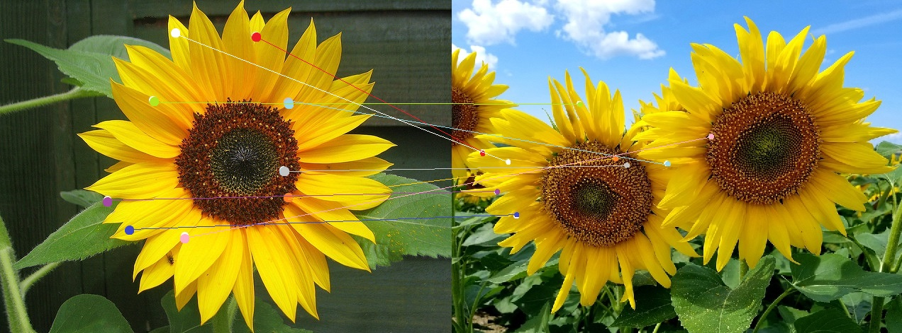

Image 1
Image 2
- Detected points in both images
- Detected matches in both images
- Evaluation

The "matches" detected above (population: 9) have been plotted in image 1 and image 2 coordinate space for better representation, with the respective points having similiar color.
Made with ❤ by Public Lab.
Check out the Source Code!